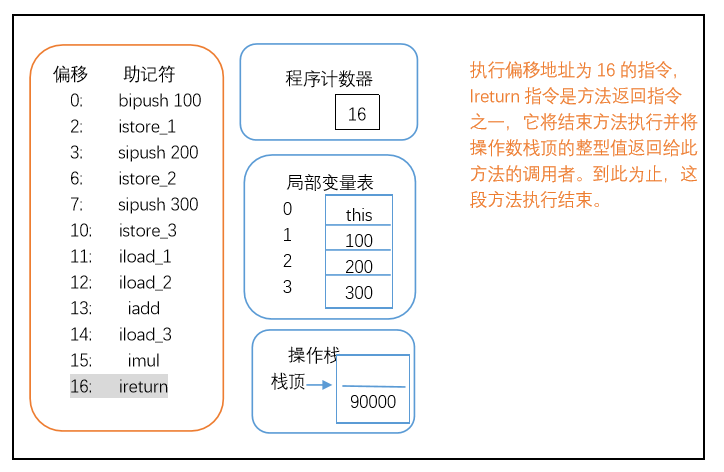

概述
本文章参考周志明的【深入理解Java虚拟机】
代码编译的结果从本地机器码转变成字节码，是存储格式发展的一小步，却是编译语言发展的一大步。
在Java虚拟机规范中制定了虚拟机字节码执行引擎的概念模型，这个概念模型成为各种虚拟机执行引擎的统一外观(Facade)。在不同的虚拟机实现里面，执行引擎在执行Java代码的时候可能会有解释执行(通过解释器执行)和编译执行(通过即时编译器产生本地代码执行)两种选择，也可能两者兼备，甚至还可能会包含几个不同级别的编译器执行引擎，但从外观上看起来，所有的Java虚拟机的执行引擎都是一致的：输入的是字节码文件，处理过程是字节码解析的等效过程，输出的是执行过程，下面将从概念模型的角度来讲解虚拟机的方法调用和字节码执行。
运行时栈帧结构
栈帧(Stack Frame)是用于支持虚拟机进行方法调用和方法执行的数据结构，它是虚拟机运行时数据区的虚拟机栈(Virtual Machine Stack)的栈元素。栈帧存储了方法的局部变量表，操作数栈，动态链接，方法返回地址和一些额外的附加信息等信息。每一个方法从调用开始到执行完成，就对应着一个栈帧在虚拟机栈中从入栈到出栈的过程。
在编译代码的时候，栈帧中需要多大的局部变量表，多深的操作数栈都已经完全确定了，并且写入到了方法表的Code属性中，因此一个栈帧需要分配多少内存，不会受到程序运行期变量数据的影响，而仅仅取决于具体虚拟机的实现。
在活动线程中，只有位于栈顶的栈帧才是有效的，称为当前栈帧，与这个当前栈帧关联的方法称为当前方法。执行引擎所运行的所有字节码指令都只针对当前栈帧进行操作。
下图是栈帧结构的概念模型：
局部变量变
局部变量表是一组变量值存储空间，用于存放方法参数和方法内部定义的局部变量。在Java程序编译为Class文件时，就在方法表的Code属性的max_locals数据项中确定了该方法需要分配的最大局部变量表的容量。
局部变量表的容量以变量槽（Variable Slot，下称Slot）为最小单位。虚拟机规范中并没有明确指明一个Slot应占的内存空间的大小，只是说到每个Slot都应该存放一个boolean，byte，char，short，int，float，reference和returnAddress这8种类型数据。
第七种reference类型表示对一个对象实例的引用，虚拟机规范即没有说明它的长度，也没有明确指定这种应用应有怎样的结构。但一般来说，虚拟机实现至少都应该能通过这个引用做到两点：一是从此引用中直接或间接的查找到对象在java堆中的数据存放的起始地址索引，二是此引用中直接或间接地查找到对象所属数据类型在方法区中的存储的类型信息，否则无法实现java语言规范中定义的语法约束的约束。
对于64位的数据类型，虚拟机会高位对齐的方式为其分配两个连续的Slot空间，java语言规定的64位数据类型只有long和double两种（reference类型可能是32位也可能是64位）。
虚拟机通过索引定位的方式使用局部变量表，索引值的范围是从0开始至局部变量表最大的Slot数量。如果访问的是32位数据类型的变量，索引n就代表了使用第n个Slot，如果是64位数据类型的变量，则说明会同时使用n和n+1两个Slot。对于两个相邻的共同存放一个64位数据的两个Slot，不允许采用任何方式单独访问其中的某一个，Java虚拟机规范中明确要求了如果遇到进行这种操作的字节码序列，虚拟机应该在类加载的校验阶段抛出异常。
在方法执行时，虚拟机是使用局部变量表完成参数变量列表的传递过程，如果是实例方法(非static方法)，那么局部变量表中的第0位索引的Slot默认是用于传递方法所属对象实例的引用，在方法中可以通过关键字“this”来访问这个隐含的参数，其余参数则按照参数列表的顺序来排列，占用从1开始的局部变量Slot，参数表分配完毕后，再根据方法体内部定义的变量顺序和作用域来分配其余的Slot。
局部变量表中的Slot是可重用的，方法体中定义的变量，其作用域并不一定会覆盖整个方法，如果当前字节码PC计算器的值已经超出了某个变量的作用域，那么这个变量对应的Slot就可以交给其它变量使用。
注意：虽然Slot重用可以节省栈帧空间，但是重用栈帧会伴随一些额外的副作用。如，某些情况下，Slot的复用会影响垃圾收集行为。
影响之一：1
2
3
4public static void main(String[] args) {
byte[] placeholder = new byte[64*1024*1024];
System.gc();
}
运行结果：
1 | [GC (System.gc()) 68198K->66120K(125952K), 0.0027128 secs] |
从结果中可以看出，在运行System.gc（）后并没有回收64M的内存。主要原因是在执行GC时，变量placeholder还处于作用域之内，虚拟机无法回收。
修改代码如下：
1 | public static void main(String[] args) { |
运行结果如下：
1 | [GC (System.gc()) 67532K->66176K(125952K), 0.0013205 secs] |
加了花括号之后，placeholder的作用域被限制在花括号之内，从逻辑代码上讲，在执行System.gc（）时，placeholder已经不可能被访问了，但结果发现，还是有64M的内存无法别回收。这又是为什么呢？？？
下面我们继续修改代码：
1 | public static void main(String[] args) { |
运行结果：
1 | [GC (System.gc()) 67532K->66176K(125952K), 0.0008704 secs] |
结果中我们发现，64M内存被回收了，这中间发生了什么？
根本原因：
placeholder被收回要看局部变量表中的slot是否还存有关于placeholder数组对象的引用，第一次修改中，代码虽然已经离开了placeholder的作用域，但在此以后，没有任何对局部变量表的读写操作，placeholder原本所占用的slot没有被其他变量复用，局部变量表仍保持着对它的关联。这种关联没有及时被打断，在绝大部分情况下影响都是很轻微的，但如果遇到一个方法，其后的代码有一些耗时很长的操作，而前面有定义了占用大量内存，实际上已经不会再使用的变量，手动将其设置为null（用来代替a=0，把变量对应的局部变量表Slot清空）便不见得是一个绝对无意义的操作。
但是我们不应该对赋null值的操作有过多的依赖，原因是：从编码角度将，以恰当的变量作用域来控制变量回收时间才是最优雅的解决办法。
局部变量不像前面介绍的类变量那样存在“准备阶段”。类变量有两次赋初始值的过程，
一次在准备阶段，赋予系统初始值。
另外一次在初始化阶段，赋予程序员定义的值。
因此即使在初始化阶段程序员没有为类变量赋值也没有关系，类变量仍然具有一个确定的初始值。
但局部变量就不一样了，如果一个局部变量定义了但没有赋初始值是不能使用的。不要认为Java中任何情况下都存在诸如整型变量默认为0，布尔变量默认为false等这样的默认值。
操作数栈
操作数栈也常被称为操作栈，它是一个后入先出栈。同局部变量表一样，操作数栈的最大深度也是编译的时候被写入到方法表的Code属性的max_stacks数据项中。
当一个方法刚刚执行的时候，这个方法的操作数栈是空的，在方法执行的过程中，会有各种字节码指向操作数栈中写入和提取值，也就是入栈与出栈操作。例如，在做算术运算的时候就是通过操作数栈来进行的，又或者调用其它方法的时候是通过操作数栈来行参数传递的。
操作数栈中元素的数据类型必须与字节码指令的序列严格匹配，在编译程序代码的时候，编译器要严格保证这一点，在类检验阶段的数据流分析中还要再次验证这一点。以iadd指令为例，这个指令用于整型数加法，这在执行时，最接近栈顶的两个元素的数据类型必须为int型，不能出现一个long和一个float使用iadd命令相加的情况
另外，在概念模型中，两个栈帧作为虚拟机栈的元素，相互之间是完全独立的，但是大多数虚拟机的实现里都会作一些优化处理，令两个栈帧出现一部分重叠。让下栈帧的部分操作数栈与上面栈帧的部分局部变量表重叠在一起，这样在进行方法调用返回时就可以共用一部分数据，而无须进行额外的参数复制传递了，如下图所示：
Java虚拟机的解释执行引擎称为“基于栈的执行引擎”，其中所指的“栈”就是操作数栈。
下面我们来讲解一下
许多java虚拟机的执行引擎在执行java代码的时候都有解释执行（通过解释器执行）和编译执行（通过即时编译器产生本地代码执行）两种选择—-关于编译执行（JIT），在以后的文章中将会讲解。
解释执行即对字节码逐条解释执行。
基于栈的解释器执行过程
本节准备一段java代码，看看虚拟机总实际是如何执行的：
1 | public int calc(){ |
使用javap命令看看它的字节码指令：
javap 提示这段代码需要深度位2的操作数栈和4个Slot的局部变量空间。我们通过图的方式来观察javap字节码指令执行中的代码，操作数栈和局部变量表的变化：
偏移地址为0的指令的情况：
偏移地址为1的指令的情况：
偏移地址为11的指令的情况：
偏移地址为12的指令的情况：
偏移地址为13的指令的情况：
偏移地址为14的指令的情况：
偏移地址为16的指令的情况：

上面的执行过程仅仅是一种概念模型，虚拟机最终会对执行过程做一些优化来提高性能，实际的运作过程不一定完全符合概念模型的描述…….更准确的说，实际情况会和上面描述的概念模型差距非常大，这种差距产生的原因是虚拟机中解析器和即时编译器都会对输入的字节码进行优化。
动态链接
每个栈帧都包含一个指向运行时常量池中该栈帧所属性方法的引用，持有这个引用是为了支持方法调用过程中的动态连接(Dynamic
Linking)。通过前面类文件结构，我们知道在Class文件的常量池中存有大量的符号引用，字节码中的方法调用指令就以常量池中指向方法的符号引用为参数。这些符号引用一部分会在类加载阶段或第一次使用的时候转化为直接引用，这种转化称为静态解析。另外一部分将在每一次的运行期期间转化为直接引用，这部分称为动态连接。
方法返回值地址
当一个方法被执行后，有两种方式退出这个方法。
第一种方式是执行引擎遇到任意一个方法返回的字节码指令，这时候可能会有返回值传递给上层的方法调用者(调用当前方法的的方法称为调用者)，是否有返回值和返回值的类型将根据遇到何种方法返回指令来决定，这种退出方法方式称为正常完成出口(Normal Method Invocation Completion)。
另外一种退出方式是，在方法执行过程中遇到了异常，并且这个异常没有在方法体内得到处理，无论是Java虚拟机内部产生的异常，还是代码中使用athrow字节码指令产生的异常，只要在本方法的异常表中没有搜索到匹配的异常处理器，就会导致方法退出，这种退出方式称为异常完成出口(Abrupt Method Invocation Completion)。一个方法使用异常完成出口的方式退出，是不会给它的调用都产生任何返回值的。
无论采用何种方式退出，在方法退出之前，都需要返回到方法被调用的位置，程序才能继续执行，方法返回时可能需要在栈帧中保存一些信息，用来帮助恢复它的上层方法的执行状态。一般来说，
- 方法正常退出时，调用者PC计数器的值就可以作为返回地址，栈帧中很可能会保存这个计数器值。
- 而方法异常退出时，返回地址是要通过异常处理器来确定的，栈帧中一般不会保存这部分信息。
方法退出的过程实际上等同于把当前栈帧出栈，因此退出时可能执行的操作有：
①.恢复上层方法的局部变量表和操作数栈，
②.把返回值(如果有的话)压入调用都栈帧的操作数栈中，
③.调用PC计数器的值以指向方法调用指令后面的一条指令等。
附加信息
虚拟机规范允许具体的虚拟机实现增加一些规范里没有描述的信息到栈帧中，例如与高度相关的信息，这部分信息完全取决于具体的虚拟机实现。在实际开发中，一般会把动态连接，方法返回地址与其它附加信息全部归为一类，称为栈帧信息。
所以可以说栈帧分为三部分：局部变量区、操作数栈和栈帧信息。
方法调用
方法调用并不等同于方法执行，方法调用阶段唯一的任务就是确定被调用方法的版本（即调用哪一个方法），暂时还不涉及方法内部的具体运行过程。
Class文件的编译过程中不包含传统编译中的连接步骤，一切方法调用在Class文件里面存储的都只是符号引用，而不是方法在实际运行时内存布局中的入口地址（相当于直接引用）。这个特性给Java带来了更强大的动态扩展能力，但也使得Java方法调用过程变得相对复杂起来，需要在类加载期间，甚至到运行期才能确定目标方法的直接引用。
解析
所有方法调用中的目标方法在Class文件里面都是一个常量池中的符号引用。 在类加载的解析阶段会将一部分符号引用转化为直接引用，这种解析能成功的前提是：方法在程序真正运行之前就有一个课确定的调用版本，并且这个方法的调用版本在运行期是不可变的。也就是说，调用目标在程序代码写好，编译器进行编译时就确定下来，这类方法的调用称为解析（Resolution）。
在java语言中满足“编译期确定，运行期不变”的方法有静态方法和私有方法两大类。前者与类型直接关联，后者在外部不可被访问，这两种方式各自的特点决定了它们都不可能通过继承或别的方式重写其他版本，因此它们都适合在类加载阶段进行解析。
与之相对应的是 ，在Java虚拟机里提供了5条方法调用字节码指令(实际上在JVM jdk 1.6层面只有前面四种方法调用的指令)，分别如下：
1).invokestatic：调用静态方法
2).invokespecial：调用类实例的构造器< init>方法、私有方法和父类方法
3).invokevirtual：调用所有的虚方法
4).invokeinterface：调用接口方法，会在运行时再确定一个实现此接口的对象。
5).invokedynamic：先在运行时动态解析出调用点限定符所引用的方法，然后再执行该方法，在此之前的4条调用指令，分派逻辑是固化在Java虚拟机内部的，而invokedynamic指令的分派逻辑是由用户所设定的引导方法决定的。
通过以上描述，我们可以得出下面两种概念：
非虚方法：只要能被invokestatic和invokespecial指令调用的方法，都可以在类加载的时候把符号引用解析为该方法的直接引用。这里主要是指，私有方法，静态方法，实例构造器，父类方法.（Java中明确说明了final方法是一种非虚方法，虽然被invokevirtual调用，但它无法被覆盖，没有其它版本）
虚方法（除去final方法），被invokevirtual和invokeinterface调用的则为虚方法，因为在编译期间并不能确定要调用的真正方法，所以称为虚方法。
示例如下：
1 | public class StaticResolution { |
使用javap命令查看字节码如下：
我们发现的确是通过invokestatic命令来调用sayHello（）方法的
对于被final修饰的方法，虽然final方法是使用invokevirtual指令来调用，但是由于它无法被覆盖，没有其他的版本，所以也无须对方法接受者进行多态选择，又或者说多态选择的结果肯定是唯一的。在java语言规范中明确说明了final方法是一种非虚方法。
解析调用一定是个静态的过程，在编译期间就完全确定，在类装载的解析阶段就会把符号引用转为直接引用，不会延迟到运行期再去完成。而分派(Dispatch)调用则可能是静态的也可能是动态的，根据分派依据的宗量数(本文后面有讲)可分为单分派和多分派。这两类分派方式的两两组合就构成了静态单分派、静态多分派、动态单分派、动态多分派4种分派组合情况。
分派
众所周知java面向对象的三个重要特性，封装、继承、多态。而在jvm层面多态的实现由分派完成。分派有静态分派、动态分派。
静态分派–代表重载
在讲解之前，我们先看下面的代码：
1 | public class StaticDispatch { |
运行结果：
1 | hello ,guy! |
为什么会出现上面的结果呢？？？我们来看看反编译的结果：
解决以上 问题之前，我们先解释两个重要的概念：
Human man = new Man();
代码里的Human称为静态类型（或者叫外观类型）：其变化仅在使用时发生，变量本身的静态类型不会改变，并且最终的静态类型是在编译期可知的。
而Man称为实际类型：其变化的结果在运行期才可确定，编译器不编译程序时并不知道一个对象的实际类型是什么。
main()方法的两次sayHello方法的调用，在方法接收者已经确定是对象sr的前提下，使用哪个重载版本，完全取决于传入参数的数量和数据类型，代码中刻意定义了两个静态类型相同但实际类型不同的变量，但虚拟机（准确的说是编译器）在重载时通过参数的静态类型，而不是实际类型作为判定依据。
而且通过以上的反编译结果我们可以发现，man和woman在编译的时候被强转成了Human类型，所以导致上面的结果
所有依赖静态类型来定位方法执行版本的分派动作称为静态分派。
静态分派典型的应用是方法重载(虚拟机准确的说是编译器，在重载时是通过参数的静态类型而不是实际类型作为判定依据的)
静态分派发生在编译阶段(也就是说在编译期是可知的)，因此确定静态分派的动作实际上不是由虚拟机来执行的
对于方法参数的匹配也是根据变量的静态类型来确定，在很多情况下根据参数的类型并不能找到”唯一的”方法调用，这个时候的处理方式是找到一个”最合适’的方法。
如下代码：1
2
3
4
5
6
7
8
9
10
11
12
13
14
15
16
17
18
19
20
21
22
23
24
25
26
27public class OverLoad {
public static void sayHello(char arg) {
System.out.println("hello char");
}
public static void sayHello(int arg) {
System.out.println("hello int");
}
public static void sayHello(long arg) {
System.out.println("hello long");
}
public static void sayHello(Character arg) {
System.out.println("hello Character");
}
public static void sayHello(Serializable arg) {
System.out.println("hello Serializable");
}
public static void sayHello(Object arg) {
System.out.println("hello object");
}
public static void sayHello(char ...arg) {
System.out.println("hello arg...");
}
public static void main(String[] args) {
sayHello('a');
}
}
从头注解方法，结果会按顺序输出。
注意:1、基本类型是重载按char->int->long->float->double顺序匹配的。
2、可变参数的重载优先级是最低的。
动态分派–代表重写
想了解动态分派，必须先了解多态另一个体现—重写。如下示例：
1 | public class DynamicDispatch { |
运行结果：
1 | man say hello |
显然这里不可能再根据静态类型来决定，因为静态类型同样都是Human的两个变量man和woman在调用sayHello()方法时执行了不同的行为，并且变量在两次调用中执行了不同的方法。
导致这个现象的原因：是这两个变量的实际类型不同。
由于invokevirtual指令执行的第一步就是在运行期间确定接收者的实际类型，所以两次调用的invokevirtual指令把常量池中的类方法符号引用解析到了不同的直接引用上，这个过程就是Java语言方法重写的本质。这种在运行期间根据实际类型确定方法执行版本的过程称为动态分派。
动态分派的一个重要体现就是方法的重写，虽然父类引用可以指向子类对象，但是动态分派的方法调用是在运行时根据对象的实际类型去确认的。
单分派与多分派
方法的接收者与方法的参数称为方法的宗量。 单分派是根据一个宗量对目标方法进行选择，多分派是根据多于一个宗量对目标方法进行选择。
示例如下：
1 | public class Dispatch { |
运行结果：
1 | father choose 360 |
看编译阶段编译器的选择过程，也就是静态分派的过程。这时选择目标方法的依据有两点：一是静态类型是Father还是Son，二是方法参数是QQ还是360。因为是根据两个宗量进行选择，所以Java语言的静态分派属于多分派类型。
再看运行阶段虚拟机的选择，也就是动态分派的过程。在执行“son.hardChoose(new QQ())”这句代码时（准确的说是在执行这句代码所对应的invokevirtual指令），由于编译期已经决定目标方法的签名必须为hardChoice(QQ)，虚拟机不会关心传递过来的参数”QQ”是什么，因为这时参数的静态类型、实际类型都对方的选择不会构成任何影响，唯一可以影响虚拟机选择的因素只有此方法的接收者的实际类型是Father还是Son。因为只有一个宗量作为选择依据，所以Java语言的动态分派属于单分派类型。
Java语言是一门静态多分派，动态单分派的语言。
虚拟机动态分派的实现
虚拟机在实际实现动态分派是基于性能考虑的。jvm在实现层面提供了一个叫做虚方法表的索引来代替元数据查找以提高性能，下面是书中的一张虚方法表结构图：
虚方法表中存放着各个方法的实际入口地址。如果某个方法在子类中没有被重写，那子类的虚方法表里面的地址入口和父类相同方法的地址入口是一致的，都指向父类的实现入口。如果重写了这个方法，子类方法表中的地址将会替换指向子类实现版本的入口地址。
Father是父类son是子类，并且子类重写了父类的连个方法，hardChoice(QQ),hardChoice(_360)，因此子类中的这两个方法指向了Son的类型数据，而这两个类都继承自Object且没重写它的任何方法，因此都指向了Object的类型数据。
方法表一般在类加载的链接阶段进行初始化，准备了类的变量初始值后，虚拟机会把该类的方法表也初始化完毕。
你敢不敢问自己到底要去哪里，
背负着恐惧寻找的终点，
非要是末路吗，
你能听到吗，
你还能听到吗，
你还有勇气直面你的恐惧吗？